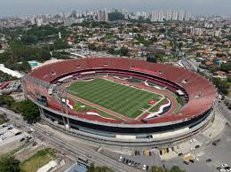

história do time
O São Paulo Futebol Clube foi criado a partir da fusão entre o Clube Atlético Paulistano e a Associação Atlética das Palmeiras, em 1930. O início da história do São Paulo Futebol Clube (SPFC) se deu em função da história do Clube Atlético Paulistano.

titulos
O São Paulo Futebol Clube possui 42 títulos oficiais principais. Título oficial é a conquista de uma competição promovida e institucionalizada no calendário das federações às quais o Tricolor está filiado (FPF, CBF, Conmebol, FIFA). Contudo, algumas dessas competições, por terem sido poucas vezes realizadas ou por terem sido criadas somente para preencher brechas temporárias de calendário são, por assim dizer, não tão importantes. Por isso a distinção "títulos oficiais principais". Neste trabalho, tais competições são apresentadas com texto em negrito. As oficiais menores surgem logo em sequência, sem qualquer grifo.Existem ainda outras competições, organizadas por clubes ou federações às quais o São Paulo não se encontra filiado. São, assim, competições amistosas, não oficiais no aspecto federativo (mas seus jogos são oficiais para os clube - visto que são autorizados e normatizados pelas federações, mesmo assim). Resumindo: jogos amistosos são jogos oficiais, mas competiçõe amistosas não são competições oficiais.Por fim, há também o caso das taças secundárias. Troféus adquiridos como uma espécie de bônus em alguma competição cuja principal premiação era outra taça. Geralmente ocorrem em casos ofertados por patrocinadores ou em homenagens de terceiros.